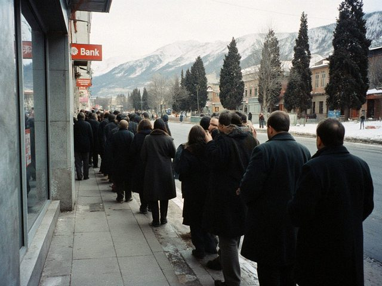

notes of a bank IT guy in Talas. plain, since 2022.
2026-03-01 · work
There is a queue before the branch opens. Mostly for dollars. Some are customers, some are people who have taken a day off to stand in a line, because in a year like this a place in a line is something you can pass to your cousin.

the pavement outside, 8:40. The door opens at 9. Nobody is looking at their phones.The machines are fine. They only give som, that is how they are set. I walked past the line and a man said "good morning, engineer". It was the nicest thing anyone has said to me this year.